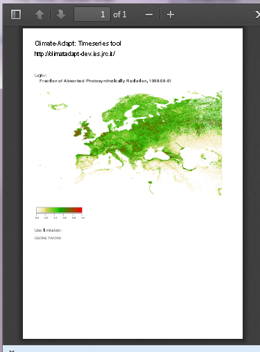
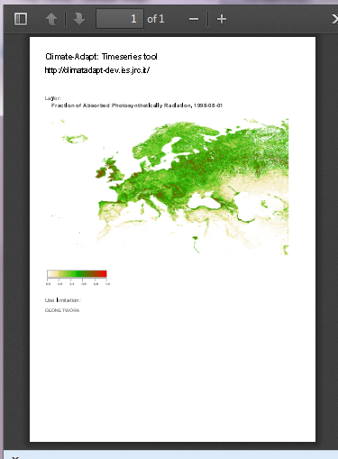

to export a single dataset as a PDF document, as shown in the following feature:
to export a single dataset as a PDF document, as shown in the following feature:

More info on Adobe PDF Reader can be found here: http://get.adobe.com/reader/
Click on to export a single dataset as a PDF document, as shown in the following feature:

More info on Adobe PDF Reader can be found here: http://get.adobe.com/reader/